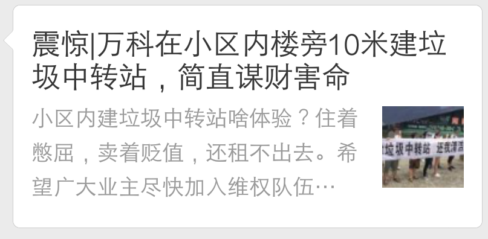

本网站随时可能被敌方屏蔽。请截图保存！
为保密，本页面不写未发生的事情，只公示、记录历史。

郑州万科城五期维权简史: 媒体曝光简史
2018-7-13 视频 都市报道主流媒体第一次曝光 [第二次]维权 万科城五期垃圾中转站
2018-7-29 微博视频[第三次]维权 天健湖售楼部现场维权
2018-7-29 微信公众号热点】郑州万科城 今天发生大规模维权！！！
2018-7-30 微信公众号热点】郑州万科城 今天发生大规模维权！！！
2018-8-1 微信公众号震惊|万科在小区内楼旁10米建垃圾中转站，简直谋财害命
2018-8-5 微信公众号泪目 | 郑州万科城五期业主雨中的哭诉
2018-8-5 微博大号转发郑州万科维权现场一位28岁 万科业主雨中的哭诉（视频已被和谐）
8-8 万科出了个坑人的退房通知，就是说不能退，退了业主也要额外给万科赔钱。很生气，决定做 万科表情包。
2018-8-9 长微博人才能在郑州能留得下吗？至郑州有关领导的一封信。
2018-8-10 微信公众号郑州万科维权现场一位28岁业主倾心诉求，看的心疼
2018-8-10 微信公众号郑州万科：请扎根，别扎心！
2018-8-11 微博文章郁亮，业主送你窗外10米一个垃圾中转站？你经常住哪？（第一批大字宣传画 万科表情包）
2018-8-15 郑州晚报报道：10号上午，高新区党工委副书记、管委会常务副主任李金勇到垃圾中转站视察，并督促相关方从群众利益出发，加强沟通协调，尽快予以答复解决。
8-15号的#郑州晚报#G02版 右上"区领导检查问题楼盘" | pdf
2018-8-14 微博13号[第四次]大规模维权 上午市信访局，下午高新区管委会。万科无视昨天政府的调停，继续施工。
2018-8-28 微博28号[第五次]大规模维权 01万科不回应垃圾中转站、燃气管道，业主怒砸万科售楼部。
[大号] 02郑州万科城五期e户型燃气管道违规，有爆炸隐患。最长的路，是万科的套路。 |
03印了一万块钱的传单 |
04燃气公司不背锅 |
05欺瞒成性的万科 |
06 报信的 |
07 扯皮 |
08 买臭鸡蛋 |
哀其不幸，怒其不争
请截图全力扩散到尽量多的群和朋友圈，唤醒邻居们维权意识和维权能力！
今天不努力维权，明天活该住在垃圾山上！特别是1-3号楼上的800多户。
至少先让你们的声音持续在微博上能被搜索到！自己搜，或者下面的链接自己点开看...
媒体报道肯定要受开发商打击，如果业主自己不闻不问，自己都不主动造舆论，民怨不够大，又没有吸引眼球的爆料，媒体凭啥帮你报道？吃饱了撑的？
用四期一期业主的评价，还是五期业主好欺负，忍辱负重，一盘散沙。
只有三四十人看到的微博卵用没有，阅读下文，把你的微博阅读量提上去，争取自己的话语权。
万科城五期维权 - 微博效果
站在一般民众和买房者的角度，搜微博关键词：
万科 |
万科城 |
郑州万科城 |
万科城七期 |
万科城湖心岛 |
万科城·湖心岛 |
- 如果自己搜不到自己的帖子，是因为你的微博权重太低。
- 增加权重的方法：
- 花钱充个微博会员(非常时刻，别心疼这十几块钱了);
- 多加别人粉丝，让别人也加你;
- 每天发微博或转发热点微博(转发也要评论几句，纯转发被认为没有信息，不会有权重);
- 不要评价党政领导人，特别是高层;
万科城五期维权原因：
不要被 透明屋/全民好房 的公众号洗脑！请认清现实问题：
各种群甚至群主里面都可能有万科奸细，他们要么鼓吹维权很可怕，要么骂人等方法激发矛盾、总是岔开话题，千方百计的阻止大家讨论维权；搞分化，阻止大家去维权。请自行甄别。
拖延到交房后，是水军们的考核目标。交房后开发商就跑了，业主就是和物业交涉了，斗争会很不直接，更困难！
1.小区内建垃圾回收站问题，到时候
臭气熏天，整个北门都废了，
垃圾车进出小区，地面也会很脏很臭，
作业到深夜，噪音污染，
这些严重影响小区品味，
坐视不管的结果：整个小区住着窝心，卖着贬值；
- 微博 美好滁州 7月16日 10:34 #小美发布#
- 【垃圾中转站臭气熏天，周边住户叫苦】
昨日上午8时刚过，记者来到位于紫薇小区附近的垃圾中转站，还未走到跟前，便闻到空气中弥漫着阵阵酸臭味。地面上污水横流，让人无处下脚，在经过太阳暴晒后，气味更加刺鼻。现场，七八辆装满垃圾的电动三轮车和一辆大卡车正在排队装卸垃圾。
- 插一句： 小区附近的垃圾中转站都这样有威力，小区内更酸爽！一年到头难以开窗户！
- 一位路过的居民向记者抱怨道，自从垃圾中转站在这里建起来后，臭气就一直没断过。特别是夏天的时候，气温又高，就更加臭不可闻。再加上一些清运垃圾的车辆还会在这里长时间地停驻，垃圾污水四处流淌，导致附近居民常年都不敢开门窗。采访中，周边居民都盼望相关部门能够及时处理并解决这一问题。
2.e户型天然气管道布线有碰头、爆炸风险，万一爆炸紧邻的c户型也可能波及，整个小区都会贬值；
3.绿化缩水，地砖劣质，没有凉亭等，都造成小区贬值；
微博发帖建议，供参考：
1.每人一天一条微博，越多人发越好；
2.实事求是发问题，一个问题一个帖子，不要有字词牵涉政府，好事都是万科在做：
要添加1-2个标签，标签可选如下：
- 一定贴上万科的品牌名，如#万科#, #万科城#, 郑州#万科城#, 郑州#万科#城, #郑州万科城#,
- 并和新项目关联起来，#万科湖心岛#, #万科城湖心岛#, #万科七期#, #万科城七期#, #万科城·湖心岛#, #万科城七期湖心岛#
- 添加最新焦点事件标签，如 #世界杯#期间, #王石#你怎么看？, #相亲#, #燃气安全#，#安全#，#燃气# ，#厉害了#
- 我们自己造的标签，如 #郑州万科城五期维权#,
例：
郑州#万科城#期期维权，现在五期因小区内建垃圾中转站而维权散步，还没开始#万科#竟然就大肆抓人！#万科城#这么丰富的坑人经验，会在 #万科湖心岛#中玩出怎样的坑人套路呢？敬请期待 #万科城湖心岛#坑人大戏！
#世界杯#期间，郑州#万科#城五期内的垃圾中转站让业主和球迷一样操碎了心，#王石#先生你怎么看？
期期维权的#郑州万科城# 终于在7月7号迎来了五期维权，虽然被万科的保安疯狂镇压并抓走几名业主，但还是改变不了#万科# 要在#郑州万科城# 五期小区内建设垃圾中转站的工程进度。期期坑人，你猜猜#郑州# 的#万科城湖心岛# 会怎么玩坑？
#万科#都能在业主窗外10米建垃圾中转站，还有啥干不出来的？合同欺瞒，早知道买哪不好？小孩子生病，常年恶臭不能开窗户，回家痛苦，租卖都减值，一辈子憋屈，无力吐槽了。相比来看，郑州其他开发商楼盘的问题都是小毛病。媒体还都不敢报道，#郑州万科城# 真是手眼通天，记者纷纷说领导不让过去采访#万科城# 了！！
解决办法汇总：
1.直接对话万科，万科给了各种理由，结论是不改；
2.向政府投诉，目前zf网站要么没回复，要么口头承诺（没人敢相信zf口头的东西，连万科都不理会政府领导对垃圾中转站的勒令停工），要么官话说符合规划云云；
3.向媒体寻求帮助，目前除了
都市报道 无态度的一次曝光，
8-15号的#郑州晚报#G02版 右上"区领导检查问题楼盘"，
还没有其他大众媒体报道；最近维权给记者们打电话，被告知，领导不让去采访万科了；可能郑州的媒体都已经被公关；
4.请律师，过程漫长，而且被告都很难选定，少不了踢皮球；万科法务肯定抠过合同了，且有签字，诉讼角度不好选；可以考虑，但是不要过度指望；
5.现场维权，天健湖万科售楼部，高新区管委会，市委，市信访局等，
(1)第一次大规模维权是2018-7-7，知情人士透漏，身穿维权背心的业主刚出现在售楼部很远的地方，
现场立刻出现大量保安和警察，业主被抓5人，其余立刻解散。
有人推测是假警察，但群里肯定有万科卧底。而且现场业主中也可能有卧底。万科已经开始暴力解决问题了？
要好好研究如何营救被抓业主。
(1). 不要动不动就责问“那些警察懂不懂法吗？怎么敢上来就抓人？”他们真抓了。
这是成年人的社会，钱会蔑视和玩弄规则，不要太天真！
啥都没做jc确实已经抓人了。想想怎么防御吧。
他们跨省抓捕都干，这个算啥？鸿茅药酒事件百度了解一下细节再说。
这个社会要是这么正义，警察和政府部门要依法办事了，崔永元还用的着费劲搞舆论战吗？
既然不指望什么社会正义，那么结论就是：网上舆论不能不搞！现场维权也不能不搞！但是如何除掉内奸，如何扩大影响力需要仔细研究，学习其他地市楼盘经验教训。
(2). 有业主担心说万科城五期的坏话，影响以后卖二手房
笑话！你以为你不说买二手房的就不知道你小区有个垃圾场啊！天真。
(2)第二次大规模维权是2018-7-29:
#郑州万科城#今天发生大规模维权，众多业主赶赴#天健湖# 万科售楼部，请求拆除#万科# 五期小区内距楼10米的垃圾中转站（建在郁亮先生#窗外# 10米他愿意吗？这辈子还能开窗户吗？）现场秩序井然，业主们情绪稳定。业主们之前发出合理诉求，但是一直不被万科有效回应，仍继续封闭施工。花了#六个钱包# 购房的业主表示有决心有信心有毅力维权到底，这垃圾中转站一定要拆！此外，#万科城# 还存在燃气管道碰头、软管过长容易爆炸的隐患，小区绿化缩水、地砖降级等问题。目前万科在郑州已经实现期期维权的战绩，而五期貌似踩中很多红线不良因素的坑，而这些当初销售们都轻描淡写，辜负了业主对万科的信任。#爆料# 这也是提醒各位购房者多做比较，不要盲目相信大品牌，理性决策，比如多花一星期研究合同，再决定签不签。#郑州爆料# 大家竞猜一下#万科城湖心岛#会有哪些坑？
郑州万科城 in weibo
(3)第三次大规模维权是2018-8-5: 万科售楼部，搜索 万科业主雨中的哭诉，见上文报道专栏。
(4)第四次大规模维权是2018-8-13（周一）: 上午去市信访局，又被要求回高新区管委会去解决。五方会谈勒令万科垃圾中转站停工，结果次日业主拍到继续施工的照片和录像。万科无视政府调停，继续安装垃圾中转站围栏。
(5)第五次大规模维权是2018-8-28（周二）: 在第二批交房期间。打印两份宣传单页：垃圾站和燃气管道各一个；易拉宝一个。华润燃气提供了万科盖章的坚持这么设计的“保证书”。
万科面对维权采取不见面、不回应、不解决。业主怒砸万科天健湖售楼部。
6.自媒体，靠大家发微博。如果不能出现巨量反应问题的铁证，上不了热搜，万科是不会关心的。
所以要齐心协力上热搜，需要持续发帖，持续转发和评论。
7.直接强拆了，趁半夜，雇黑铲车直接推倒；
8.坐等其他业主出面，啥都不做，爱咋滴咋滴。希望这样态度的越少越好！
雪崩了，没有一片雪花认为自己有责任。
安居客，房天下，链家网....都发发
特别是外地的，力所能及的每天发几个微博，做几个评论，别啥都不干
对，为万科做一辈子免费“广告”，每一天！
自媒体宣传目标：
1.实事求是反映问题;
2.尽力扩大曝光量;
3.把问题和万科品牌名直接关联; 转发、评论万科在全国各地的投诉案例；
4.最终对新楼盘潜在买家给出万科1-5期期期维权的事实，让购房者参考，
站在新买家的角度搜索微博关键词，检查曝光效果；
万科宣传啥，我们用啥关键词，死死绑定万科，为万科天天做免费“广告”一辈子！
和任何正在流行的关键词关联，如#世界杯#, #王石#， #窗外#
最终达到 垃圾中转站 拆除等效果。否则什么关闭、暂时停用都是骗人的。
"We are only as strong as we are united, as weak as we are divided."
“只有团结一致我们才能强大无比，四分五裂只会让我们软弱无力。”
—Albus Dumbledore